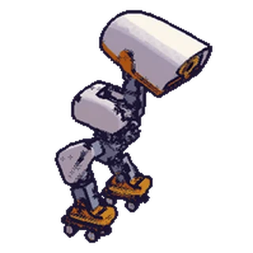

XR and interaction prototyping
I turn ideas into things you can try in a headset or a browser tab, fast. Comfort-first movement, onboarding that teaches by doing, and input that maps cleanly from keyboard to controllers.
- Unity
- OpenXR
- Quest
- three.js
- C#
- TypeScript